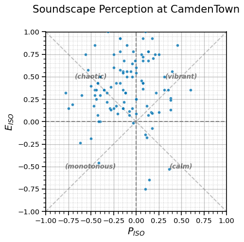
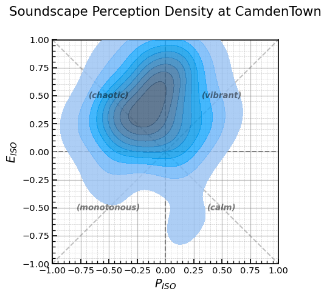
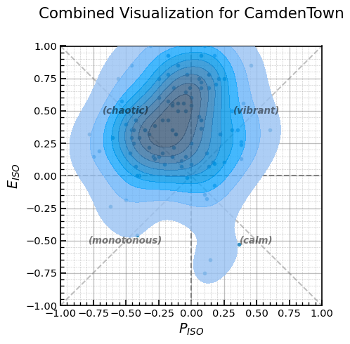
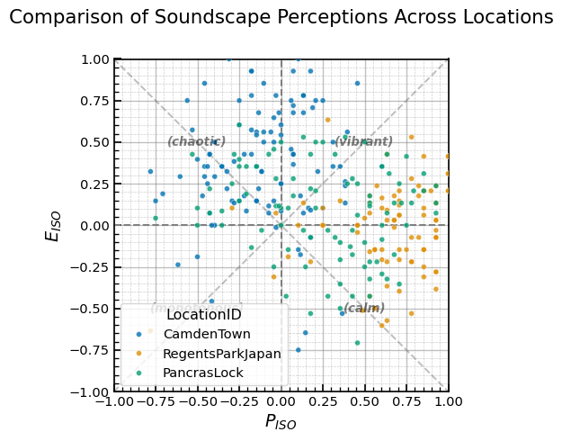
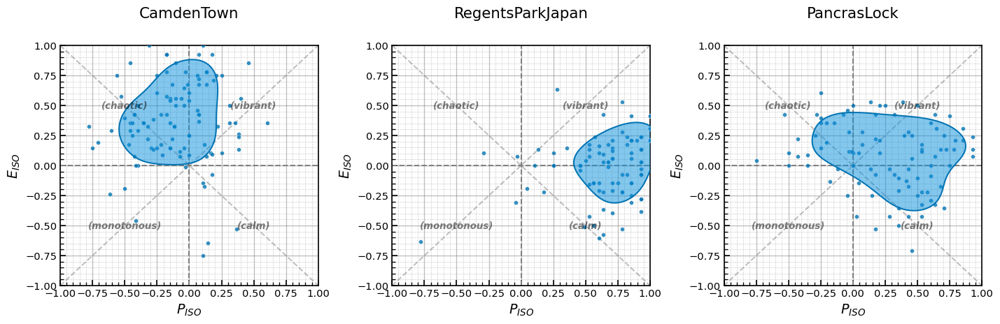
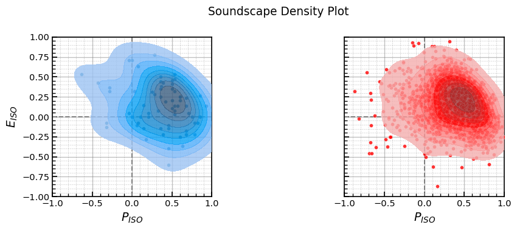
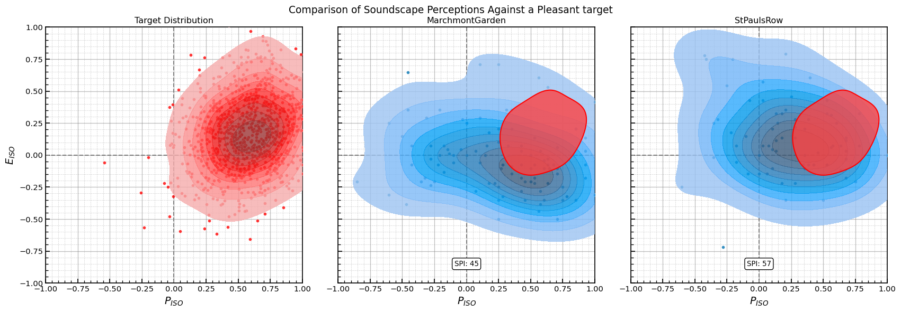
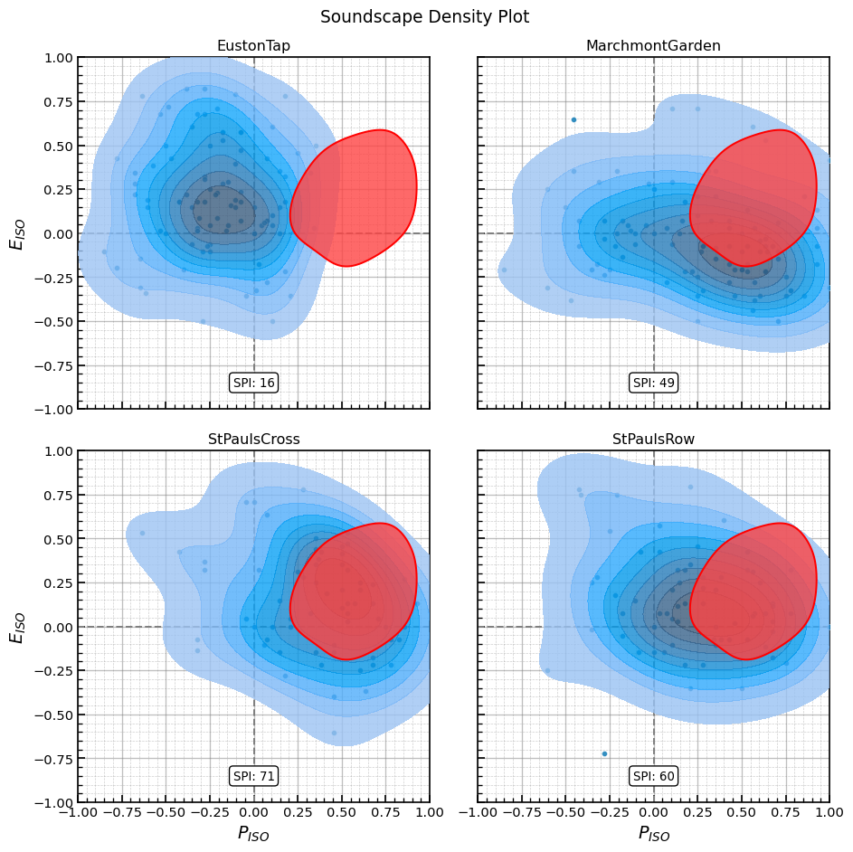

# Import the necessary packages
import matplotlib.pyplot as plt # For creating plots
import numpy as np # For numerical operations
import pandas as pd # For data handling
import seaborn as sns # For enhanced visualizations
# Import soundscapy with the alias 'sspy'
import soundscapy as sspy
# Set a nice plot style
sns.set_context("notebook")Soundscapy Quick Start Guide for Beginners.

Welcome to Soundscapy! This tutorial is designed for users who are new to soundscape analysis with Python. We’ll show you how Soundscapy makes it easy to load, process, and visualise soundscape survey data.
What is Soundscapy?
Soundscapy is a Python package for analyzing and visualizing soundscape data. It provides simple, (often) one-line functions for tasks that would otherwise require many lines of complex code. Whether you’re analyzing survey responses, visualizing soundscape perceptions, or calculating the Soundscape Perception Index (SPI), Soundscapy makes it easy.
What You’ll Learn
In this tutorial, you’ll learn:
- How to load and process soundscape survey data
- How to create visualizations with Soundscapy’s simple API
- How to calculate and interpret the Soundscape Perception Index (SPI)
Let’s get started!
1. Working with Soundscape Data in Soundscapy
Now that we understand the basics of Python and DataFrames, let’s see how Soundscapy makes it easy to work with soundscape data.
1.1 Loading Soundscape Data
Soundscapy provides simple functions to load data from various soundscape databases. The default is the International Soundscape Database (ISD):
# Load data from the International Soundscape Database (ISD)
isd_data = sspy.isd.load()
# Display basic information about the dataset
print(f"ISD Dataset shape: {isd_data.shape}")
print(f"Number of locations: {isd_data['LocationID'].nunique()}")
print(f"Number of records: {isd_data['RecordID'].nunique()}")
# Display the first few rows
print("\nFirst few rows of the ISD dataset:")
print(isd_data.head())ISD Dataset shape: (3589, 142)
Number of locations: 26
Number of records: 2664
First few rows of the ISD dataset:
LocationID SessionID GroupID RecordID start_time \
0 CarloV CarloV2 2CV12 1434 2019-05-16 18:46:00
1 CarloV CarloV2 2CV12 1435 2019-05-16 18:46:00
2 CarloV CarloV2 2CV13 1430 2019-05-16 19:02:00
3 CarloV CarloV2 2CV13 1431 2019-05-16 19:02:00
4 CarloV CarloV2 2CV13 1432 2019-05-16 19:02:00
end_time latitude longitude Language Survey_Version ... \
0 2019-05-16 18:56:00 37.17685 -3.590392 eng engISO2018 ...
1 2019-05-16 18:56:00 37.17685 -3.590392 eng engISO2018 ...
2 2019-05-16 19:12:00 37.17685 -3.590392 eng engISO2018 ...
3 2019-05-16 19:12:00 37.17685 -3.590392 eng engISO2018 ...
4 2019-05-16 19:12:00 37.17685 -3.590392 eng engISO2018 ...
RA_cp90_Max RA_cp95_Max THD_THD_Max THD_Min_Max THD_Max_Max \
0 8.15 6.72 -0.09 -11.76 54.18
1 8.15 6.72 -0.09 -11.76 54.18
2 5.00 3.91 -2.10 -19.32 72.52
3 5.00 3.91 -2.10 -19.32 72.52
4 5.00 3.91 -2.10 -19.32 72.52
THD_L5_Max THD_L10_Max THD_L50_Max THD_L90_Max THD_L95_Max
0 34.82 26.53 5.57 -9.0 -10.29
1 34.82 26.53 5.57 -9.0 -10.29
2 32.33 24.52 0.25 -16.3 -17.33
3 32.33 24.52 0.25 -16.3 -17.33
4 32.33 24.52 0.25 -16.3 -17.33
[5 rows x 142 columns]1.2 Data Validation and Processing
Before analyzing soundscape data, it’s important to validate it to ensure quality. Soundscapy makes this easy with built-in validation functions:
# Validate the ISD dataset
valid_data, excluded_data = sspy.databases.isd.validate(isd_data)
# Display validation results
print(f"Original dataset size: {len(isd_data)}")
print(f"Valid dataset size: {len(valid_data)}")
print(f"Number of excluded data: {len(excluded_data)}")Original dataset size: 3589
Valid dataset size: 3533
Number of excluded data: 561.3 Calculating ISO Coordinates
The ISO 12913 standard defines a circumplex model for soundscape perception, with two main dimensions: pleasantness and eventfulness. Soundscapy can calculate these coordinates from the PAQ responses with a single function:
# Calculate ISO coordinates
valid_data = sspy.surveys.add_iso_coords(valid_data, overwrite=True)
# Display the first few rows with ISO coordinates
print("Data with ISO coordinates:")
print(valid_data[["LocationID", "ISOPleasant", "ISOEventful"]].head())Data with ISO coordinates:
LocationID ISOPleasant ISOEventful
0 CarloV 0.219670 -0.133883
1 CarloV -0.426777 0.530330
2 CarloV 0.676777 -0.073223
3 CarloV 0.603553 -0.146447
4 CarloV 0.457107 -0.1464471.4 Filtering and Selecting Data
Soundscapy provides convenient functions for filtering and selecting data:
# Select data for a specific location
location_id = "CamdenTown"
location_data = sspy.databases.isd.select_location_ids(valid_data, location_id)
print(f"Data for {location_id}:")
print(f"Number of records: {len(location_data)}")
print(f"Mean ISOPleasant: {location_data['ISOPleasant'].mean():.3f}")
print(f"Mean ISOEventful: {location_data['ISOEventful'].mean():.3f}")Data for CamdenTown:
Number of records: 105
Mean ISOPleasant: -0.103
Mean ISOEventful: 0.3642. Creating Beautiful Visualizations with Soundscapy
One of the most powerful features of Soundscapy is its ability to create beautiful, publication-quality visualizations with just a single function. No need to worry about complex matplotlib customizations!
2.1 Basic Scatter Plots
Let’s start with a simple scatter plot of ISO coordinates:
# Create a scatter plot with a single function
sspy.scatter(
location_data,
title=f"Soundscape Perception at {location_id}",
diagonal_lines=True, # Add diagonal lines for the circumplex model
)
plt.show()

That’s it! With just one line of code, we’ve created a professional-looking scatter plot with: - Properly labeled axes - A clear title - Diagonal lines showing the circumplex model - Appropriate axis limits - A clean, readable design
2.2 Density Plots
For a more sophisticated visualization that shows the distribution of perceptions, we can use a density plot:
# Create a density plot with a single line of code
sspy.density(
location_data,
title=f"Soundscape Perception Density at {location_id}",
diagonal_lines=True,
fill=True, # Fill the contours with color
incl_scatter=False, # Do not include scatter points
)
plt.show()

2.3 Combined Plots
Soundscapy also makes it easy to create combined plots that show both individual data points and the overall distribution:
# Create a combined scatter and density plot
sspy.iso_plot(
location_data,
title=f"Combined Visualization for {location_id}",
plot_layers=["scatter", "density"], # Include both scatter and density layers
diagonal_lines=True,
)
plt.show()

2.4 Comparing Multiple Locations
One common task in soundscape analysis is comparing perceptions across different locations. Soundscapy makes this easy:
# Select data for multiple locations
locations = ["CamdenTown", "RegentsParkJapan", "PancrasLock"]
multi_location_data = pd.concat(
[sspy.databases.isd.select_location_ids(valid_data, loc) for loc in locations]
)
# Create a scatter plot with locations as hue
sspy.scatter(
multi_location_data,
title="Comparison of Soundscape Perceptions Across Locations",
hue="LocationID", # Color points by location
diagonal_lines=True,
)
plt.show()

2.5 Creating Multi-panel Visualizations
For a more detailed comparison, we can create multi-panel visualizations:
# Create a figure with subplots for each location
fig, axes = plt.subplots(1, len(locations), figsize=(15, 5))
# Plot each location in its own subplot
for i, location in enumerate(locations):
location_data = sspy.databases.isd.select_location_ids(valid_data, location)
# Use iso_plot for each subplot
sspy.iso_plot(
location_data,
title=location,
plot_layers=["scatter", "simple_density"],
diagonal_lines=True,
ax=axes[i],
)
plt.tight_layout()
plt.show()

3. Understanding the Soundscape Perception Index (SPI)
The Soundscape Perception Index (SPI) is a powerful metric for comparing soundscape distributions. It quantifies the similarity between two soundscape distributions on a scale from 0 to 100.
3.1 Creating Multi-dimensional Skewed Normal Distributions
To calculate the SPI, we first need to fit multi-dimensional skewed normal (MSN) distributions to our data:
# Import the MultiSkewNorm class
from soundscapy.spi import MultiSkewNorm
# Select data for two locations to compare
location1 = "StPaulsCross"
location2 = "StPaulsRow"
data1 = sspy.databases.isd.select_location_ids(valid_data, location1)
# Fit MSN distributions to both locations
msn1 = MultiSkewNorm()
msn1.fit(data=data1[["ISOPleasant", "ISOEventful"]])
msn1.sample_mtsn(1000)
print(f"MSN parameters for {location1}:")
print()
print(msn1.cp)
print()
print(msn1.dp)/var/folders/6t/7h8wn9n92w5f24ml_bkwck9m0000gn/T/ipykernel_80863/412969792.py:11: UserWarning: The SPI analysis module is experimental. Use with caution.
msn1 = MultiSkewNorm()MSN parameters for StPaulsCross:
Centred Parameters:
mean: [0.357 0.139]
sigma: [[ 0.11 -0.024]
[-0.024 0.081]]
skew: [-0.575 -0.011]
Direct Parameters:
xi: [0.722 0.223]
omega: [[0.243 0.007]
[0.007 0.088]]
alpha: [-4.448 -1.511]from soundscapy import ISOPlot
fitted_data = pd.DataFrame(
{
"ISOPleasant": msn1.sample_data[:, 0],
"ISOEventful": msn1.sample_data[:, 1],
}
)
p = (
ISOPlot()
.create_subplots(nrows=1, ncols=2, figsize=(8, 4), subplot_titles=[""])
.add_scatter(data=data1, on_axis=0)
.add_scatter(data=fitted_data, on_axis=1, color="red")
.add_density(data=data1, on_axis=0)
.add_density(data=fitted_data, on_axis=1, color="red")
.style()
)
plt.tight_layout()
p.show()/var/folders/6t/7h8wn9n92w5f24ml_bkwck9m0000gn/T/ipykernel_80863/2977760463.py:11: ExperimentalWarning: `ISOPlot` is currently under development and should be considered experimental. `ISOPlot` implements an experimental API for creating layered soundscape circumplex plots. Use with caution.
ISOPlot()

data2 = sspy.databases.isd.select_location_ids(valid_data, location2)
msn2 = MultiSkewNorm()
msn2.fit(data=data2[["ISOPleasant", "ISOEventful"]])
print(f"\nMSN parameters for {location2}:")
print(msn2.cp)
print(msn2.dp)
MSN parameters for StPaulsRow:
Centred Parameters:
mean: [0.235 0.121]
sigma: [[ 0.119 -0.016]
[-0.016 0.079]]
skew: [-0.218 0.433]
Direct Parameters:
xi: [ 0.511 -0.16 ]
omega: [[ 0.195 -0.094]
[-0.094 0.158]]
alpha: [-1.52 2.324]/var/folders/6t/7h8wn9n92w5f24ml_bkwck9m0000gn/T/ipykernel_80863/3539347689.py:3: UserWarning: The SPI analysis module is experimental. Use with caution.
msn2 = MultiSkewNorm()3.4 Creating a Target Distribution
One powerful application of the SPI is comparing actual soundscapes to a target or ideal distribution:
# Create a target distribution
target_msn = MultiSkewNorm()
target_msn.define_dp(
xi=np.array([0.6, 0.2]), # A pleasant but not too eventful soundscape
omega=np.array([[0.08, 0.02], [0.02, 0.08]]), # Scale matrix (spread)
alpha=np.array([0, 0]), # Symmetric distribution
)
target_msn.sample(n=1000) # Generate sample data
# Calculate SPI against the target
spi1_location1 = target_msn.spi_score(data1[["ISOPleasant", "ISOEventful"]])
spi1_location2 = target_msn.spi_score(data2[["ISOPleasant", "ISOEventful"]])
print(f"SPI between {location1} and target: {spi1_location1}")
print(f"SPI between {location2} and target: {spi1_location2}")/var/folders/6t/7h8wn9n92w5f24ml_bkwck9m0000gn/T/ipykernel_80863/3107196999.py:2: UserWarning: The SPI analysis module is experimental. Use with caution.
target_msn = MultiSkewNorm()SPI between StPaulsCross and target: 68
SPI between StPaulsRow and target: 573.3 Visualizing the Comparison
Let’s visualize the two distributions to better understand the SPI:
from soundscapy import ISOPlot
# Select data for two locations to compare
location1 = "MarchmontGarden"
location2 = "StPaulsRow"
data1 = sspy.databases.isd.select_location_ids(valid_data, location1)
data2 = sspy.databases.isd.select_location_ids(valid_data, location2)
target_df = pd.DataFrame(
{
"ISOPleasant": target_msn.sample_data[:, 0],
"ISOEventful": target_msn.sample_data[:, 1],
}
)
# Create a plot for the SPI scores
plot = (
ISOPlot(title="Comparison of Soundscape Perceptions Against a Pleasant target")
.create_subplots(
nrows=1,
ncols=3,
figsize=(6, 6),
subplot_datas=[target_df, data1, data2],
subplot_titles=["Target Distribution", location1, location2],
)
.add_scatter(color="red", on_axis=0)
.add_density(color="red", on_axis=0)
.add_scatter(on_axis=1)
.add_density(on_axis=1)
.add_scatter(on_axis=2)
.add_density(on_axis=2)
.add_spi(on_axis=1, spi_target_data=target_df, show_score="on axis")
.add_spi(on_axis=2, spi_target_data=target_df, show_score="on axis")
.style()
)
plot.show()
# plot.add_data("CamdenTown", spi1_location1)
# plot.add_data("RegentsParkJapan", spi1_location2)
# plot.add_data("PancrasLock", spi_score)/var/folders/6t/7h8wn9n92w5f24ml_bkwck9m0000gn/T/ipykernel_80863/1661159736.py:19: ExperimentalWarning: `ISOPlot` is currently under development and should be considered experimental. `ISOPlot` implements an experimental API for creating layered soundscape circumplex plots. Use with caution.
ISOPlot(title="Comparison of Soundscape Perceptions Against a Pleasant target")

4. Putting It All Together
Now that we’ve learned the basics of Soundscapy, let’s put it all together in a complete analysis workflow:
- Load and validate data
- Calculate ISO coordinates
- Visualize the data
- Compare locations
- Calculate SPI
Here’s a complete example:
data = sspy.isd.load()
data.LocationID.unique()array(['CarloV', 'SanMarco', 'PlazaBibRambla', 'CamdenTown', 'EustonTap',
'Noorderplantsoen', 'MarchmontGarden', 'MonumentoGaribaldi',
'TateModern', 'PancrasLock', 'TorringtonSq', 'RegentsParkFields',
'RegentsParkJapan', 'RussellSq', 'StPaulsCross', 'StPaulsRow',
'CampoPrincipe', 'MiradorSanNicolas', 'LianhuashanParkEntrance',
'LianhuashanParkForest', 'PingshanPark', 'PingshanStreet',
'ZhongshanPark', 'OlympicSquare', 'ZhongshanSquare',
'DadongSquare'], dtype=object)# 1. Load and validate data
data = sspy.databases.isd.load()
valid_data, _ = sspy.databases.isd.validate(data)
# 2. Calculate ISO coordinates
valid_data = sspy.surveys.add_iso_coords(valid_data)
# 3. Select locations to analyze
locations = ["EustonTap", "MarchmontGarden", "StPaulsCross", "StPaulsRow"]
locations_data = sspy.isd.select_location_ids(valid_data, locations)
# 4. Select a target distribution
target_msn = MultiSkewNorm()
target_msn.define_dp(
xi=np.array([0.6, 0.2]), # A pleasant but not too eventful soundscape
omega=np.array([[0.1, 0.02], [0.02, 0.1]]),
alpha=np.array([0, 0]),
)
target_msn.sample(n=1000)
plot = (
ISOPlot(locations_data)
.create_subplots(subplot_by="LocationID", auto_allocate_axes=True)
.add_scatter()
.add_density()
.add_spi(spi_target_data=target_msn.sample_data, show_score="on axis")
.style()
)
plot.show()/var/folders/6t/7h8wn9n92w5f24ml_bkwck9m0000gn/T/ipykernel_80863/2490149953.py:13: UserWarning: The SPI analysis module is experimental. Use with caution.
target_msn = MultiSkewNorm()
/var/folders/6t/7h8wn9n92w5f24ml_bkwck9m0000gn/T/ipykernel_80863/2490149953.py:22: ExperimentalWarning: `ISOPlot` is currently under development and should be considered experimental. `ISOPlot` implements an experimental API for creating layered soundscape circumplex plots. Use with caution.
ISOPlot(locations_data)
/Users/mitch/Documents/GitHub/Soundscapy/src/soundscapy/plotting/iso_plot.py:502: UserWarning: This is an experimental feature. The number of rows and columns may not be optimal.
self._allocate_subplot_axes(subplot_titles)

Summary
In this tutorial, we’ve covered the basics of using Soundscapy for soundscape analysis:
-
Python Basics: We learned about variables, functions, packages, and DataFrames.
-
Soundscape Data: We saw how to load, validate, and process soundscape data.
-
Visualization: We created beautiful visualizations with just a single line of code.
-
SPI: We calculated and interpreted the Soundscape Perception Index.
The key takeaway is that Soundscapy makes complex soundscape analysis tasks simple. Instead of writing dozens of lines of code for each visualization or calculation, you can use Soundscapy’s intuitive functions to accomplish the same tasks with just a few lines.
Next Steps
Now that you’ve completed this quick start guide, you might want to explore:
-
More Advanced Visualizations: Check out the Advanced Visualization Techniques tutorial.
-
Working with Different Databases: Learn about the different soundscape databases available in Soundscapy.
-
In-depth SPI Analysis: Dive deeper into the Soundscape Perception Index and its applications.
-
Custom Analysis Workflows: Combine Soundscapy functions with your own code to create custom analysis workflows.
Happy soundscape analyzing!